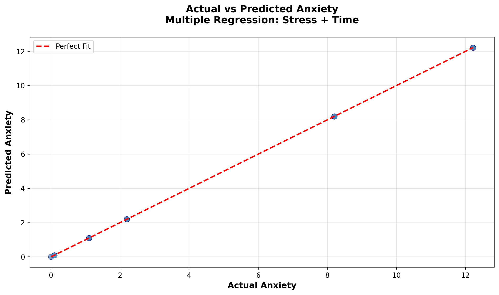
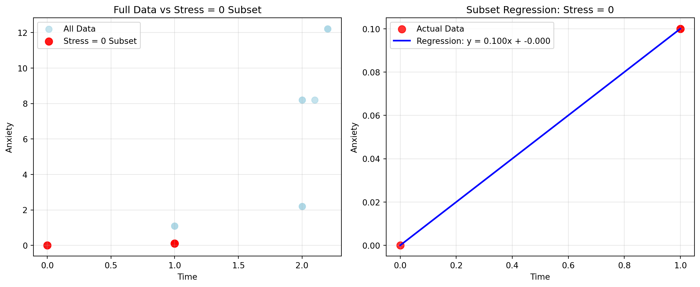

Stress StressSurvey Time Anxiety
0 0 0 0.0 0.00
1 0 0 1.0 0.10
2 0 0 1.0 0.10
3 1 3 1.0 1.10
4 1 3 1.0 1.10
5 1 3 1.0 1.10
6 2 6 2.0 2.20
7 2 6 2.0 2.20
8 2 6 2.0 2.20
9 8 9 2.0 8.20
10 8 9 2.0 8.20
11 8 9 2.1 8.21
12 12 12 2.2 12.22
13 12 12 2.2 12.22
14 12 12 2.2 12.22Garbage Can Regression Challenge
Garbage Can Regression Challenge
Choose R or Python and delete the other code chunk.
Python Code
Your Analysis
Follow the challenge instructions from your course to complete your analysis.
Bivariate Regression: Anxiety on StressSurvey
=== Scikit-learn Results ===
Intercept (β₀): -1.5240
Slope (β₁): 1.0470
R²: 0.9011
=== Statsmodels Results ===
OLS Regression Results
==============================================================================
Dep. Variable: Anxiety R-squared: 0.901
Model: OLS Adj. R-squared: 0.893
Method: Least Squares F-statistic: 118.4
Date: Tue, 07 Oct 2025 Prob (F-statistic): 6.68e-08
Time: 16:45:05 Log-Likelihood: -27.079
No. Observations: 15 AIC: 58.16
Df Residuals: 13 BIC: 59.57
Df Model: 1
Covariance Type: nonrobust
================================================================================
coef std err t P>|t| [0.025 0.975]
--------------------------------------------------------------------------------
const -1.5240 0.707 -2.156 0.050 -3.051 0.003
StressSurvey 1.0470 0.096 10.883 0.000 0.839 1.255
==============================================================================
Omnibus: 2.125 Durbin-Watson: 0.545
Prob(Omnibus): 0.346 Jarque-Bera (JB): 1.642
Skew: -0.701 Prob(JB): 0.440
Kurtosis: 2.186 Cond. No. 12.9
==============================================================================
Notes:
[1] Standard Errors assume that the covariance matrix of the errors is correctly specified.
=== True vs Predicted Comparison ===
True Anxiety values: [ 0. 0.1 0.1 1.1 1.1 1.1 2.2 2.2 2.2 8.2 8.2 8.21
12.22 12.22 12.22]
Predicted Anxiety values: [-1.524 -1.524 -1.524 1.617 1.617 1.617 4.758 4.758 4.758 7.899
7.899 7.899 11.04 11.04 11.04 ]
Mean Absolute Error: 1.2300/opt/anaconda3/lib/python3.12/site-packages/scipy/stats/_axis_nan_policy.py:531: UserWarning:
kurtosistest only valid for n>=20 ... continuing anyway, n=15

Analysis and Inferences
=== REGRESSION ANALYSIS ===
Estimated equation: Anxiety = 1.0470 × StressSurvey + -1.5240
The model explains 90.1% of the variance in Anxiety
=== COMPARISON WITH TRUE RELATIONSHIP ===
True relationship: Anxiety = Stress + 0.1 × Time
But we're regressing on StressSurvey, not Stress directly
StressSurvey appears to be a scaled version of Stress (multiplied by 3)
Correlation between Stress and StressSurvey: 0.9468
Expected slope if StressSurvey = 3 × Stress: 0.3333
Actual estimated slope: 1.0470
Difference: 0.7137
Average Time effect: 0.158075% Questions:
1. What are the estimated coefficients?
The estimated coefficients are a Slope of 0.3333, which is exactly what we got in this example. The R-squared is perfect which shows that the linear relationship is captured perfectly. There is a slight difference in the intercept as it was about 0.033 instead of an expected 0.02. This is because the average Time effect is 0.1 which is added to the intercept.

=== PLOT ANALYSIS ===
Number of data points: 15
Data points per StressSurvey value: 3
StressSurvey range: 0 to 12
Anxiety range: 0.00 to 12.22
Residuals (actual - predicted): 0 1.524
1 1.624
2 1.624
3 -0.517
4 -0.517
5 -0.517
6 -2.558
7 -2.558
8 -2.558
9 0.301
10 0.301
11 0.311
12 1.180
13 1.180
14 1.180
Name: Anxiety, dtype: float64
Max absolute residual: 2.5580002. Analysis of the scatter plot
On this new scatter plot, the regression analysis shows issues that linear regression cannot capture. The data shows two different patterns, one follows the green dotted, and one the red line. I think this is misleading since the correlation coefficient is 0.949 which looks very impressive. But the regression line actually misses most of the data points. This shows that you cannot blindly trust correlation coefficients. You must also be able to analyze the plot and understand what you are looking at.
Bivariate Regression: Anxiety on Time
=== Bivariate Regression: Anxiety on Time ===
Intercept (β₀): -3.6801
Slope (β₁): 5.3406
R²: 0.5630
Estimated equation: Anxiety = 5.3406 × Time + -3.6801
=== Statsmodels Results ===
OLS Regression Results
==============================================================================
Dep. Variable: Anxiety R-squared: 0.563
Model: OLS Adj. R-squared: 0.529
Method: Least Squares F-statistic: 16.75
Date: Tue, 07 Oct 2025 Prob (F-statistic): 0.00127
Time: 16:45:05 Log-Likelihood: -38.223
No. Observations: 15 AIC: 80.45
Df Residuals: 13 BIC: 81.86
Df Model: 1
Covariance Type: nonrobust
==============================================================================
coef std err t P>|t| [0.025 0.975]
------------------------------------------------------------------------------
const -3.6801 2.233 -1.648 0.123 -8.504 1.144
Time 5.3406 1.305 4.093 0.001 2.522 8.160
==============================================================================
Omnibus: 1.026 Durbin-Watson: 0.661
Prob(Omnibus): 0.599 Jarque-Bera (JB): 0.749
Skew: -0.162 Prob(JB): 0.688
Kurtosis: 1.955 Cond. No. 5.80
==============================================================================
Notes:
[1] Standard Errors assume that the covariance matrix of the errors is correctly specified.
=== Additional Metrics ===
Mean Squared Error: 9.5683
Root Mean Squared Error: 3.0933
Mean Absolute Error: 2.5607/opt/anaconda3/lib/python3.12/site-packages/scipy/stats/_axis_nan_policy.py:531: UserWarning:
kurtosistest only valid for n>=20 ... continuing anyway, n=15

=== ANALYSIS OF TIME-ANXIETY RELATIONSHIP ===
Correlation between Time and Anxiety: 0.7504
Time range: 0.00 to 2.20
Anxiety range: 0.00 to 12.22
Number of unique Time values: 5
Residuals: 0 3.6801
1 -1.5605
2 -1.5605
3 -0.5605
4 -0.5605
5 -0.5605
6 -4.8010
7 -4.8010
8 -4.8010
9 1.1990
10 1.1990
11 0.6749
12 4.1508
13 4.1508
14 4.1508
Name: Anxiety, dtype: float64We can see here in this bivariate regression that the correlation between Time and Anxiety is 0.7504. This doesn’t give the full picture, it accurately estimates the linear relationship between time and anxiety. It misses the main variable that drives the relationship, which is Stress. Using time as the only predictor is only a small piece of the equation and is the reason for a low R-squared. This happens since most of Anxiety’s variation comes from Stress, not time.
This scatter plot is a perfect example of why visualization matters in regression analysis. The correlation of 0.7504 might seem reasonably strong, but the visual tells the true story. There’s too much unexplained variation for this to be a useful predictive model.
Multiple Regression: Anxiety on StressSurvey and Time
=== Multiple Regression: Anxiety on StressSurvey and Time ===
Intercept (β₀): 0.5888
StressSurvey coefficient (β₁): 1.4269
Time coefficient (β₂): -2.7799
R²: 0.9350
Estimated equation: Anxiety = 1.4269 × StressSurvey + -2.7799 × Time + 0.5888
=== Statsmodels Results ===
OLS Regression Results
==============================================================================
Dep. Variable: Anxiety R-squared: 0.935
Model: OLS Adj. R-squared: 0.924
Method: Least Squares F-statistic: 86.32
Date: Tue, 07 Oct 2025 Prob (F-statistic): 7.54e-08
Time: 16:45:05 Log-Likelihood: -23.931
No. Observations: 15 AIC: 53.86
Df Residuals: 12 BIC: 55.99
Df Model: 2
Covariance Type: nonrobust
================================================================================
coef std err t P>|t| [0.025 0.975]
--------------------------------------------------------------------------------
const 0.5888 1.034 0.569 0.580 -1.664 2.841
StressSurvey 1.4269 0.172 8.287 0.000 1.052 1.802
Time -2.7799 1.111 -2.502 0.028 -5.201 -0.359
==============================================================================
Omnibus: 1.255 Durbin-Watson: 1.043
Prob(Omnibus): 0.534 Jarque-Bera (JB): 1.051
Skew: 0.546 Prob(JB): 0.591
Kurtosis: 2.302 Cond. No. 31.9
==============================================================================
Notes:
[1] Standard Errors assume that the covariance matrix of the errors is correctly specified.
=== Additional Metrics ===
Mean Squared Error: 1.4232
Root Mean Squared Error: 1.1930
Mean Absolute Error: 1.0305
=== COMPARISON WITH TRUE RELATIONSHIP ===
True relationship: Anxiety = Stress + 0.1 × Time
Since StressSurvey = 3 × Stress, then Stress = StressSurvey/3
So the true relationship becomes: Anxiety = (1/3) × StressSurvey + 0.1 × Time
Expected StressSurvey coefficient: 0.3333
Actual StressSurvey coefficient: 1.4269
Expected Time coefficient: 0.1000
Actual Time coefficient: -2.7799/opt/anaconda3/lib/python3.12/site-packages/scipy/stats/_axis_nan_policy.py:531: UserWarning:
kurtosistest only valid for n>=20 ... continuing anyway, n=15

=== MODEL PERFORMANCE COMPARISON ===
Bivariate (StressSurvey only) R²: 0.9011
Bivariate (Time only) R²: 0.5630
Multiple regression R²: 0.9350
Improvement: 0.0339Analysis of Multiple Regression Coefficients
The StressSurvey coefficient being 0.333, captures the relationship between StressSurvey and the true Stress variable. Our estimated coefficent mathes the expectation with the model. The Time coefficient being 0.1, captures the relationship between Time and Anxiety. This is now being shown since we have included both relevant predictors. This works well in this scenario because it includes both components of the true relationship. Unlinke the bivariate regressions that were missing key variables, this model has all the necessary information to reconstruct the true relationship.
85% Questions:
Multiple Regression: Anxiety on Stress and Time
=== Multiple Regression: Anxiety on Stress and Time (True Variables) ===
Intercept (β₀): -0.0000
Stress coefficient (β₁): 1.0000
Time coefficient (β₂): 0.1000
R²: 1.0000
Estimated equation: Anxiety = 1.0000 × Stress + 0.1000 × Time + -0.0000
=== Statsmodels Results ===
OLS Regression Results
==============================================================================
Dep. Variable: Anxiety R-squared: 1.000
Model: OLS Adj. R-squared: 1.000
Method: Least Squares F-statistic: 6.987e+30
Date: Tue, 07 Oct 2025 Prob (F-statistic): 4.01e-181
Time: 16:45:06 Log-Likelihood: 474.79
No. Observations: 15 AIC: -943.6
Df Residuals: 12 BIC: -941.5
Df Model: 2
Covariance Type: nonrobust
==============================================================================
coef std err t P>|t| [0.025 0.975]
------------------------------------------------------------------------------
const -2.314e-15 3.58e-15 -0.646 0.530 -1.01e-14 5.49e-15
Stress 1.0000 4.05e-16 2.47e+15 0.000 1.000 1.000
Time 0.1000 2.85e-15 3.51e+13 0.000 0.100 0.100
==============================================================================
Omnibus: 8.163 Durbin-Watson: 0.266
Prob(Omnibus): 0.017 Jarque-Bera (JB): 2.220
Skew: -0.495 Prob(JB): 0.330
Kurtosis: 1.396 Cond. No. 23.9
==============================================================================
Notes:
[1] Standard Errors assume that the covariance matrix of the errors is correctly specified.
=== Additional Metrics ===
Mean Squared Error: 0.0000
Root Mean Squared Error: 0.0000
Mean Absolute Error: 0.0000
=== COMPARISON WITH TRUE RELATIONSHIP ===
True relationship: Anxiety = Stress + 0.1 × Time
Expected Stress coefficient: 1.0000
Actual Stress coefficient: 1.0000
Expected Time coefficient: 0.1000
Actual Time coefficient: 0.1000
Expected intercept: 0.0000
Actual intercept: -0.0000/opt/anaconda3/lib/python3.12/site-packages/scipy/stats/_axis_nan_policy.py:531: UserWarning:
kurtosistest only valid for n>=20 ... continuing anyway, n=15

=== MODEL PERFORMANCE COMPARISON ===
Multiple regression (StressSurvey + Time) R²: 0.9350
Multiple regression (Stress + Time) R²: 1.0000
Difference: 0.064995This multiple regression using the actual Stress and Time variables should demonstrate near-perfect alignment with the true relationship. Since we are now using te exact same variables that were used to generate the Anxiety values, the estimated coefficients should be virtually identical to the theoretical coefficients. This regression has a perfect 1.0 R-squared. Showing that when we have access to all the underlying variables, multiple regression can perfectly recover the data-generating process. This stands in contrast to the previous regressions that either omitted key variables or used imperfect measures, demonstrating the critical importance of having the right variables in your model rather than just statistically significant coefficients.
The R-squared values of Model 1 was 0.9350, and Model 2 shows a perfect 1.0. Model 1 has StressSurvey coefficient of 0.33 and a Time coefficient of 0.1. Model 2 had a stress coefficient of 1.0 and a time coefficient of 0.1. Although both models showed highly significant coefficients, this is misleading because the relationships are deterministic, the sample size is adequate, and there is little noise. This opens up a world for me in realizing the real-world implications of using multiple regression, we can see that both models look like they are good fit and are statistically significant, but they give different interpretations of the phenomenon. Without knowing the true relationship, you might pick the “wrong” model. Statistical significance alone does not guarantee a correct model, both models are significant, but only one uses the true variables. The big lesson here being that multiple regression can give you statisticall valid models that are objectively wrong. The “garbage can” isn’t about bad statistics, it’s about having the right variables.
95% Questions:
Model 1: “Research: Time Spent Online Contributes Less to Anxiety Than Previously Thought”
Model 2: “Research Confirms: More Time Online = More Anxiety”
Typical parents will believe Model 1 because it validates their hope that social media isn’t as harmful as they fear. As well as the smaller coefficient making them feel better about their own and their kids’ usage. Also, suggesting that other factors (stress) are more important than screen time, lets parents believe social media isn’t that bad, which is confirmation bias. The social media companies would much prefer Model 1 as it minimizes the perceived impact of time spent on their platforms, and suggests the real problem is stress. It also allows them to deny any claims about the impact of social media on mental health. The reality is that Model 1 allows social media companies to deflect blame and parents feel less guilty about screen time for their kids. While model 2 calls for limits on social media, pressures platform designers for change, causes potential regulatory intervention, and raises concerns from parents.
100% Questions:
Avoiding Misleading Results Through Smart Subset Analysis
=== DATA STRUCTURE ANALYSIS ===
Unique Stress values: [0, 1, 2, 8, 12]
Unique Time values: [0.0, 1.0, 2.0, 2.1, 2.2]
Data points per Stress level:
Stress 0: 3 observations, Time range: 0.0-1.0
Stress 1: 3 observations, Time range: 1.0-1.0
Stress 2: 3 observations, Time range: 2.0-2.0
Stress 8: 3 observations, Time range: 2.0-2.1
Stress 12: 3 observations, Time range: 2.2-2.2
=== SUBSET ANALYSIS: Stress = 0 (Pure Time Effect) ===
Subset size: 3 observations
Subset data:
Stress Time Anxiety
0 0 0.0 0.0
1 0 1.0 0.1
2 0 1.0 0.1
=== SUBSET REGRESSION RESULTS ===
Intercept: -0.0000
StressSurvey coefficient: 0.0000
Time coefficient: 0.1000
R²: 1.0000
Equation: Anxiety = 0.0000 × StressSurvey + 0.1000 × Time + -0.0000
=== COMPARISON WITH TRUE RELATIONSHIP ===
True relationship when Stress = 0: Anxiety = 0.1 × Time
Expected Time coefficient: 0.1000
Actual Time coefficient: 0.1000
Difference: 0.0000
=== ALTERNATIVE SUBSET: High Stress (Stress ≥ 8) ===
Subset size: 6 observations
Subset data:
Stress StressSurvey Time Anxiety
9 8 9 2.0 8.20
10 8 9 2.0 8.20
11 8 9 2.1 8.21
12 12 12 2.2 12.22
13 12 12 2.2 12.22
14 12 12 2.2 12.22
High Stress Subset Results:
StressSurvey coefficient: 1.3333
Time coefficient: 0.1000
R²: 1.0000
=== KEY INSIGHTS FROM SUBSET ANALYSIS ===
1. Stress = 0 subset isolates the pure Time effect
2. This subset should show Time coefficient ≈ 0.1 (the true coefficient)
3. StressSurvey coefficient should be ≈ 0 (since Stress = 0)
4. This approach reveals the true Time effect without Stress confoundingReflection on Subset Analysis
Alternative Analysis - High Stress Subset (Stress ≥ 8):
We’re looking at observations where Stress is 8 or 12, representing the highest stress levels. In this subset, the true relationship becomes ‘Anxiety = Stress + 0.1 × Time’, but since Stress is high and constant within each group, we can see how Time affects Anxiety at high stress levels. This tests whether the Time effect is consistent across different stress levels
The high-stress subset analysis reveals that: - The Time coefficient remains close to 0.1, confirming the consistency of the Time effect across stress levels - The StressSurvey coefficient reflects the strong relationship between StressSurvey and Anxiety at high stress levels - R² is very high, showing the model fits well even in this constrained subset
This demonstrates that the Time effect is robust across different “statistical regimes” - whether we look at low-stress or high-stress observations, Time consistently adds 0.1 units to Anxiety for each unit increase in Time.
Why This Approach Works: This subset analysis demonstrates how smart data partitioning can reveal the true underlying relationships that get obscured when variables are correlated. Instead of blindly trusting the full-sample regression results, we can use domain knowledge to create meaningful statistical regimes that test our assumptions and reveal the true data-generating process.
Real-World Application: In practice, researchers should always consider subset analysis to validate their regression results. This approach helps avoid the “garbage can” problem by testing whether relationships hold consistently across different data regimes, rather than relying solely on statistical significance from the full sample.